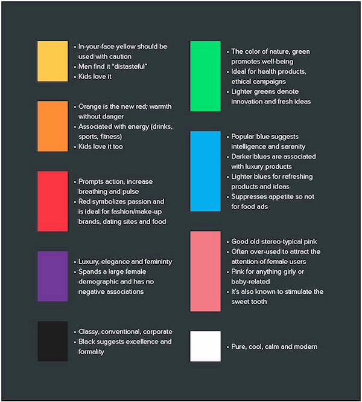
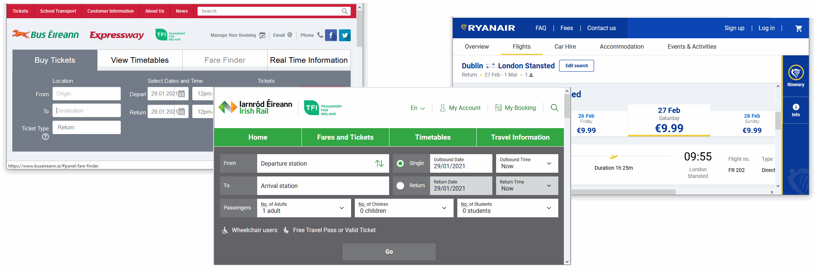
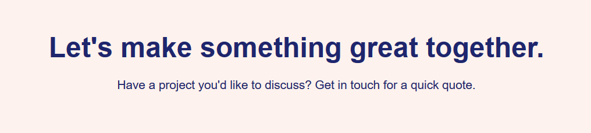
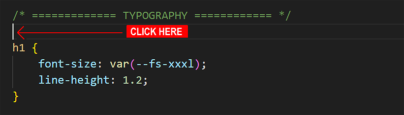
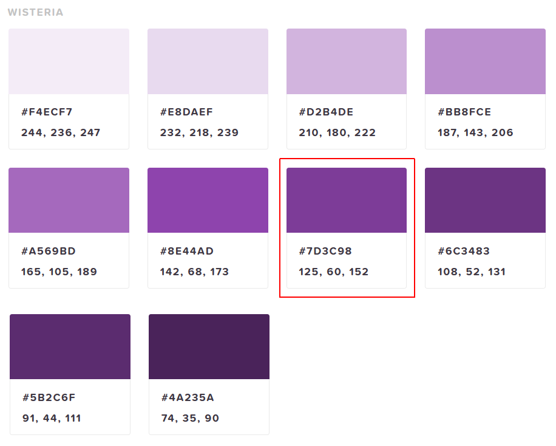
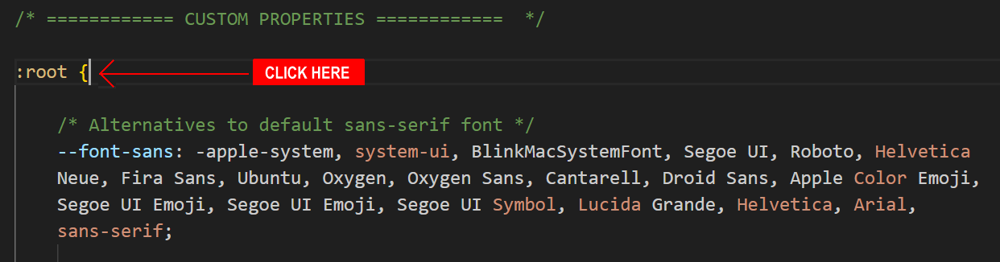
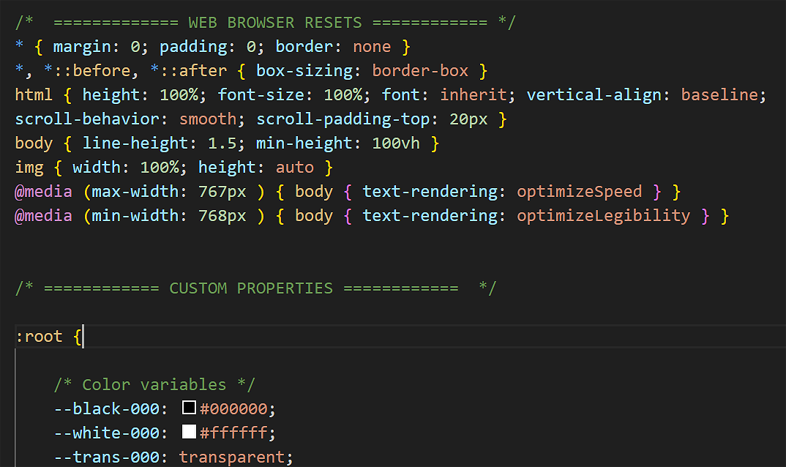
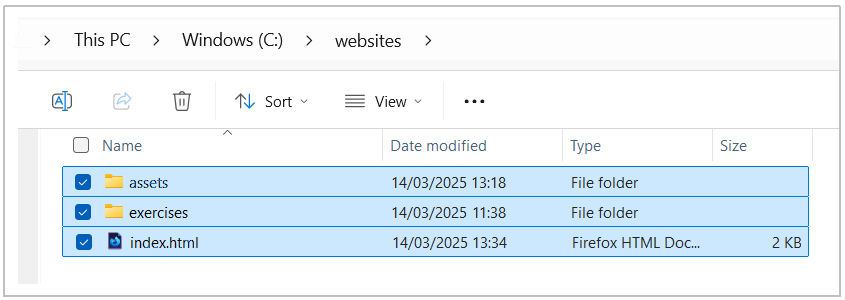

Learning Goals
At the end of this Tutorial you will be able to:
- Apply the CSS properties of color and background-color to web page elements.
About colours in web design
Colours provide web pages with interest and personality. You can see from the examples below how the same image but with different dominant colours affects the impact of a web page.

In deciding which colours to use with your web pages, you may find the list of resources at the end of this Tutorial helpful.
Below is a colour psychology infographic from one of the resources.
Keep in mind that the above chart will not hold true for every individual. However, this information is a good, research-based starting point for deciding your website colour choices.
Choosing your dominant ‘brand’ colour
Your website will have one main or dominant colour that will also be the main colour of your 'brand'.
For Bus Eireann, for example, the main brand colour is red. For Irish Rail, it is green. And for Ryanair, it is blue.
For choosing a modern-looking dominant colour, check out the Flat Design and Bootflat websites.
Creating your colour palette
In addition to your chosen dominant colour, you will typically select one, two or three other colours to create a colour combination or palette of colours that work together harmoniously.

Three good websites for helping you decide on a colour palette are:
Colours: two common CSS properties
The two most commonly used CSS colour-related properties are listed below. Note the US-style spelling in each case.
- color: You use this to set the colour of text elements, such as headings, paragraphs, lists and hyperlinks. By default, web browsers display all text in black.
- background-color: You can use this to set the colour behind selected HTML elements or the background of the entire <body> of a web page. All backgrounds are coloured white by default.
color: /* Insert colour value here */; background-color: /* Insert colour value here */;
In the example below, you can see the text elements <h2> and <p> both have a color of dark blue. They are positioned in a <section> container with a background-color of light pink.
section { background-color: #fef1ef } h2 { color: #1e266d } p { color: #1e266d }
By default, web pages have a white-coloured background. You can change this by updating the background-color of the <body> tag.
body { background-color: #f7f7f7 }
Aim for a harmonious combination of text and background colours in the main content area of your web pages.
The colour name system
Simply typing a colour name – such ‘red’ or ‘blue’ (without quotes) – in a CSS style rule is a common starting point when designing a new web page.
h1 { color: red }
Many colour names are both easy-to-remember and self-explanatory. For example, ‘yellow’, ‘purple’ and so on. Other colour names are less obvious, such as ‘hotpink’, ‘mediumvioletred’ and ‘lavenderblush’.
Colour names are not case-sensitive. For example, these three versions of the same colour name are all valid.
h3 { color: DarkOrchid } h3 { color: darkorchid } h3 { color: DARKORCHID }
You can see a full list of colour names on this W3 Schools web page.
Adding colours to your four sample CSS files
In previous Tutorials, you created four sample web pages with these file names:
index.html
exercises/page-1.html
exercises/page-2.html
exercises/page-3.html
Later, you linked your sample web pages to these four stylesheet files:
assets/css/global.css
exercises/assets/css/style-1.css
exercises/assets/css/style-2.css
exercises/assets/css/style-3.css
Now you will add colour style rules to the four CSS files (style-1.css, style-2.css, style-3.css, and global.css) and view the effect on the linked sample web pages.
Your finished web pages should look as shown below.


Updating style-1.css with colours
Follow these steps to add colours to your first sample web page page-1.html by updating its linked style-1.css stylesheet.
- In VS Code, open the stylesheet file named style-1.css in your exercises/assets/css folder.
- In the TYPOGRAPHY block of the CSS file, just before the h1 declaration block, click and press the Enter key a few times to open some new, blank lines.

On the new line, add the following declaration block with a single style rule for the <body> of the web page:
body { background-color: antiquewhite; } - To the h1, h2 and h3 style declaration blocks, add this new style rule inside the curly braces:
color: brown;
- At the end of the CSS file, add this declaration block with a single style rule for the hyperlink colour.
a { color: brown; } - Save the style-1.css file.
You can close your style-1.css file in VS Code. View the page-1.html web page in your browser.
Working with colour models
Up to now you have used colour names such as 'red' or 'blue' to set the colours of HTML elements. However, colour names have two disadvantages:
- Limited choice: Modern electronic screens can display at least 16 million different colours. With colour names, you are limited to only 147 choices.
- Misleading names: Even when colour names are easy-to-remember, they are not always accurate. For example, DarkGray is actually lighter than Gray.

Note that, in CSS, the colour name of grey can be written in either US spelling (gray) or UK spelling (grey). Either will work correctly.
Frontend developers use two common colour models or systems for setting colours in web pages:
- RGB system: Colours are created by combining different intensities of the three primary colours: red, green and blue. The three values can range from 0 to 255. See the examples below:
h1 { color: rgb(0,0,255) /* blue */ } h2 { color: rgb(255,248,220) /* light brown */ } h3 { color: rgb(255,0,255) /* magenta */ }
- Hex system: The most widely used colour model, but also the least intuitive. Note each hex (short for hexadecimal) colour code begins with the hash # symbol. Here are some examples:
h1 { color: #0000FF /* blue */ } h2 { color: #FFF5DC /* light brown */ } h3 { color: #FF00FF /* magenta */ }
Updating style-2.css with colours
Follow these steps to add colours to your second sample web page page-2.html by updating its linked style-2.css stylesheet.
- In your web browser, go to the following website: Flat Design
- Scroll down to the part of the web page named WISTERIA and click on a dark purple colour.  Drag across the #7d3c98 hex code to select it and then copy it.
- In VS Code, open the stylesheet file named style-2.css in your exercises/assets/css folder.
- In the TYPOGRAPHY block of the CSS file, just before the h1 declaration block, click and press the Enter key a few times to open some new, blank lines.
- On the new line, add the following declaration block with a single style rule for the <body> of the web page. Paste in the copied hex colour code:
body { background-color: #7d3c98; } - To the h1, h2 and p style declaration blocks, add this new style rule inside the curly braces:
color: white;
- At the end of the file, add this for the hyperlink colour.
a { color: white; } - Save the style-2.css file.
You can close your style-2.css file in VS Code. View the page-2.html web page in your browser.
Colours and custom properties
Modern front-end frameworks typically use a palette of ready-to-use colours defined as custom variables in a CSS file. You can see two examples of such frameworks and their colour palettes below.


Using such a colour palette for your web pages is a two-step process as follows:
- Add the palette of colours with easy-to-use and easy-to-understand names to the CSS stylesheet as custom properties.
Some typical examples are shown below.
--red-050: #FEF2F2; --red-100: #fff5f5; --red-200: #fed7d7; --red-300: #feb2b2; --red-400: #fc8181; --red-500: #f56565; --red-600: #e53e3e; --red-700: #c53030; --red-800: #9b2c2c; --red-900: #742a2a;
As you can see, every custom property name begins with two dashes -- - Apply colours from the palette to elements in the web page as required.
To use a custom property, enter the var keyword, followed by a parenthesis () containing the name of the custom property. See the examples below.
section { background-color: var(--yellow-500); } h2 { background-color: var(--blue-700); }
Updating style-3.css with colours
Follow these steps to add colours to your third sample web page page-3.html by updating its linked style-3.css stylesheet.
- In your web browser, click the following file to open it in a new tab, and select and copy all the text in the file: custom-colors.txt
- In VS Code, open the stylesheet file named style-3.css in your exercises/assets/css folder.
- Near the top of the file, in the CUSTOM PROPERTIES block, click just after root: { and press the Enter key a few times to open some new, blank lines. 
- Paste in the contents of the custom-colors.txt file, and save style-3.css. The top part of your stylesheet should now look as shown below.  All these custom colour properties are now available to the linked web page page-3.html
- In the TYPOGRAPHY block of the CSS file, just before the h1 declaration block, click and press the Enter key a few times to open some new, blank lines.
- On the new line, add the following declaration block with a single style rule for the <body> of the web page. Paste in a custom colour as follows:
body { background-color: var(--blue-200); }You can combine the two body rules into one as follows:body { background-color: var(--blue-200); font-family: var(--font-serif); } - To the h1 and header h2 declaration blocks, add this new colour style rule inside the curly braces:
color: var(--blue-800);
Feel free to experiment with different colour choices. - Save the style-3.css file.
You can close your style-3.css file in VS Code. View the page-3.html web page in your browser.
Updating global.css with colours
Follow these steps to add colours to your home web page index.html by updating its linked global.css stylesheet.
- In VS Code, open the stylesheet file named global.css in your main assets/css folder.
- In the TYPOGRAPHY block of the CSS file, just before the h1 declaration block, click and press the Enter key a few times to open some new, blank lines.
- On the new line, add the following declaration block with a single style rule for the <body> of the web page:
body { background-color: lightgreen; } - At the end of the file, add this for the hyperlink colour.
a { color: darkgreen; } - Save the global.css file.
You can close your global.css file in VS Code. View the index.html web page in your browser.
Uploading your files to GitHub
You are now ready to upload your work to your account on GitHub.
- Open a new tab in your web browser and go to github.com. If you are not already signed in to your GitHub account, sign in now.

- On your GitHub home page, click the name of the repository (‘repo’) that holds your web pages. Its name will look as follows, where username is your chosen username on GitHub.
username.github.io

- On the next GitHub screen displayed, near the right of the screen, you can see a button named Add file. Click on it.

- From the dropdown list displayed, choose the option Upload files.

- In File Explorer (Windows) or Finder (Apple Mac), drag-and-drop your index.html file and your 📁 assets and 📁 exercises sub-folders to upload them to your repository on GitHub. 
- Scroll down to the bottom of the GitHub screen, and accept or edit the short message (Add files via upload) in the Commit changes box.
- Finally, click the green Commit changes button to upload your entire exercises sub-folder and all the files it contains.
Your web pages are now published on GitHub at web addresses similar to the following, where username is the username you have chosen for your GitHub account:
Your web pages are now published on GitHub at web addresses similar to the following, where username is the username you have chosen for your GitHub account:
https://username.github.io/index.html
– or simply –
https://username.github.io
https://username.github.io/exercises/page-1.html
https://username.github.io/exercises/page-2.html
https://username.github.io/exercises/page-3.html
It may take a few minutes for your uploaded files to appear on GitHub.
Further resources
Colour psychology 101: How colour affects perception of your website
By Safa Khudeira at the Intechnic Blog
How to use the psychology of colour to increase website conversions
By Neil Patel at the Neil Patel Blog
Understanding colour psychology for impactful web design
By Jerry Cao at DesignModo
The psychology of colour in web design
By Jenni McKinnon at the Envato Blog
Chapter 4: Color
From The Magic of CSS by Adam Schwartz
Color Hunt
A platform for colour inspiration with user-contributed colour combinations.
Muzli Colors
A colour palette/schemes generator.